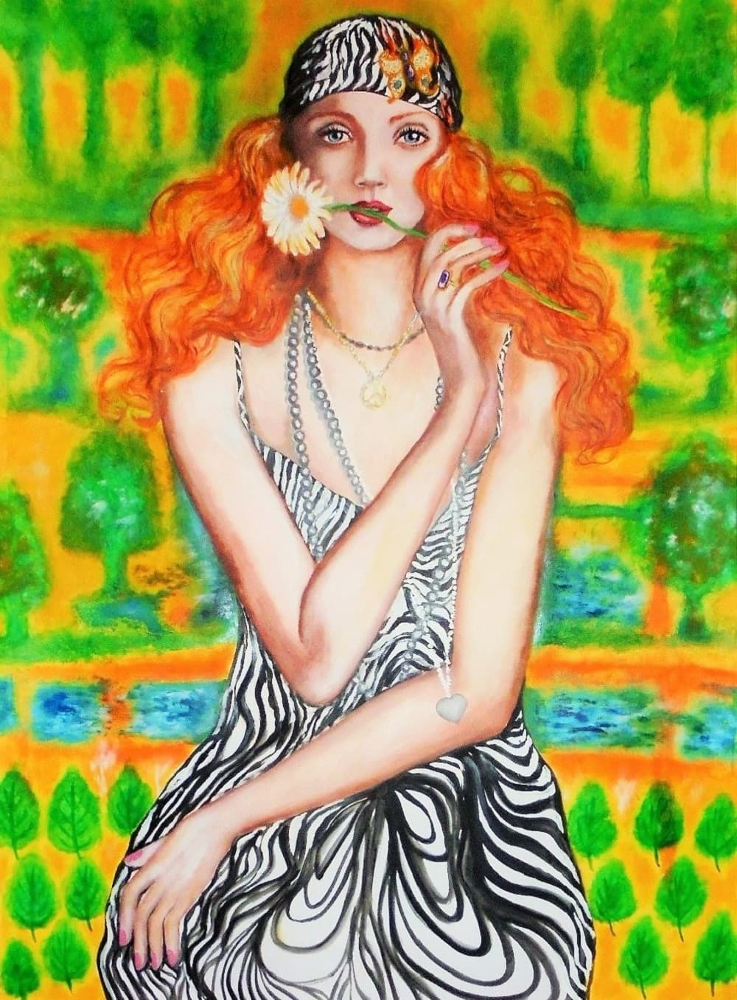
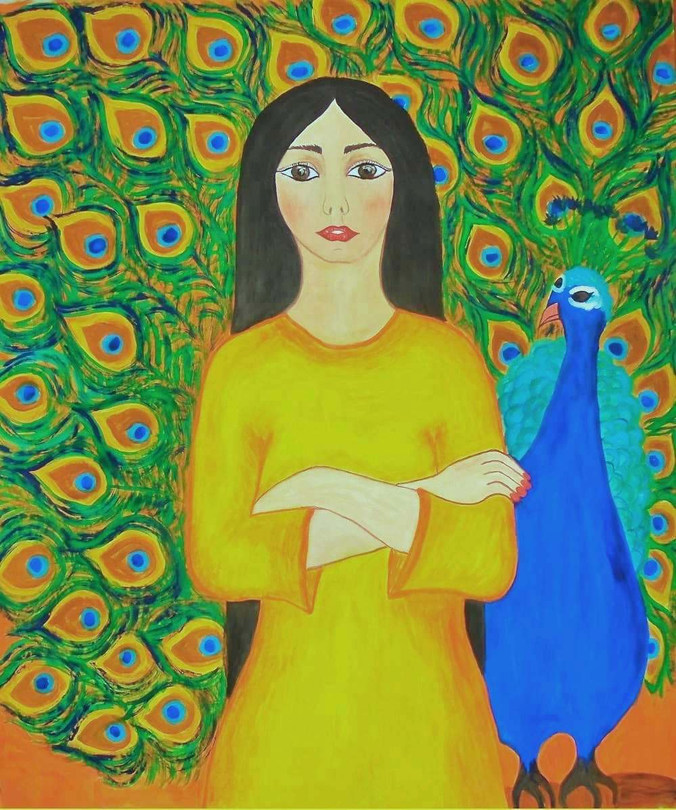
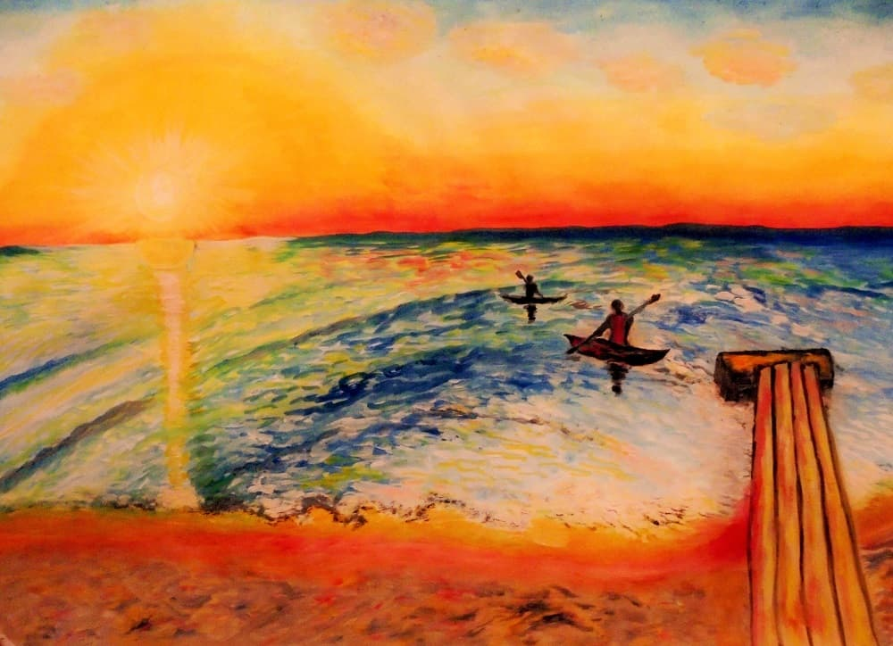
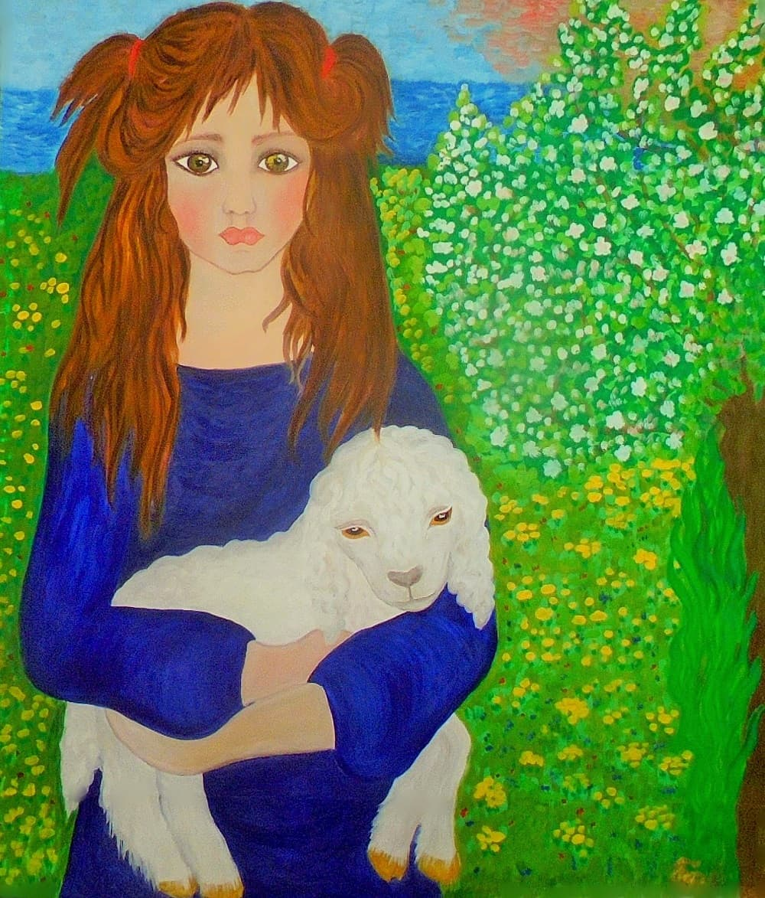

The site chose this picture for you
Сайт выбрал для вас картину
As the color of spirituality and awareness, lush purple pushes Sagittarius's philosophical mind toward enlightenment and openness.
Also a color of abundance, purple encourages Sagittarius's natural luck and positive nature, and drives it to continuously broaden its horizons.

Earthy grey and brown help Capricorn find the strongest and most practical path to take in life. These strong but neutral colors enhance Capricorn's solidity, reliability, and traditionalism. A combination of extremes white and black grey increases the conservative nature of Capricorn and its no-nonsense approach to life. Brown represents stability, and can greatly benefit the Goat's steadfast determination as it strives to reach its goals.
Calming blue helps encourage Aquarius's brilliant ideas and balance its restless energy. Just like the sky and the waters Aquarius is so closely connected to, blue represents vastness and creates a smooth flow of ideas, conversation, and experimentation. Fun fact: Uranus Aquarius's ruling planet is also blue!

Perfectly pale green brings about healing and renewal and connects Pisces with its subconscious. As the color of life, light green represents renewal and inspiration, encouraging the healing and rejuvenating energies that Pisces is known for.

The color red stirs Aries's soul and enhances passion, energy, and initiative. It's the color of excitement and assertion, which supports Aries's active nature and eagerness for life. Red demands attention and Aries is a sign that doesn't like to be ignored. It's also no surprise that Aries's ruling planet, Mars, is known as "The Red Planet." The more shades of red Aries surrounds itself with, the greater their natural powers can be.

Fresh green nurtures Taurus's spirit and reinforces its connection to nature and growth. Just like the lush pastures the Bull resides in, green represents growth, and Taurus is a sign of absolute progress. The return of green in the springtime Taurus's season further enhances its connection to this sign.

Inspiring yellow lifts Gemini's spirit and triggers curiosity and brilliant thoughts. This inspiring and life-giving color shines through in Gemini's exciting, upbeat nature. Mimicking the warm Sun, yellow lightens and brightens everything around it. As the color of the mind and the intellect, yellow enhances Gemini's mental powers and focus.

Bright white and silver connect Cancer with its intuition and provide a clean, clear slate. Like the glistening surface of water or the shining face of the Moon, silver and white are colors of intuition and purity. They increase Cancer's sensitivity and understanding, allowing love to flow at its deepest level.

Glistening gold empowers Leo's warm heart and strengthens its positive spirit. Shining with royalty and class, gold has always been a symbol of power and prestige. So it's no wonder Leo the King of the Jungle is stirred by this expressive hue. Gold gives Leo the attention it wants, and supports its generous nature and warm, optimistic outlook on life.

Classic, natural brown and green keep Virgo grounded and focused on continuous growth. Brown represents stability, and supports the careful and methodical approach the Virgin takes to life. In nature green is the color of growth, and strengthens Virgo's lifelong plight toward self-improvement.

Airy pink and light blue help to open Libra's heart and soften its presence. These pale hues bring a calming and likeable presence to Libra's personality. Symbolizing a cool, subtle breeze, light blue increases clarity and balance, while pink invokes Libra's sweet and loving nature.

Dark and mysterious black keeps Scorpio intensely inquisitive and focused on transformation. Black represents the depths where the Scorpion resides, and strengthens its drive to look below the surface and question everything.